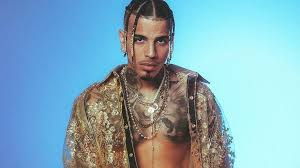

RAUW ALEJANDRO

| TITULO | LETRA |
| TIROTEO | Tú y yo, los dos juntito' frente al mar Sé por dónde quieres ir a parar Aunque mires así, no servirá Si es que nos entendemos sin hablar Muero cuando te vas Toco el cielo si estás Sentada en mi portal Siempre haciéndote esperar Y ahora quiero que vuelvas como un niño los finde' (pa-ra-ra-ra, pa-ra) Desde que te has ido, no hacen gracia los chiste' (pa-ra-ra-ra, pa-ra-ra-ra) Me he cortado el pelo, me he comprado otro tinte (pa-ra-ra-ra, ra-ra-ra) Buscando a ver si encuentro alguna como tú en Tinder (pa-ra, pa) Mi niña, eres la prota' de mis canciones tristes (pa-ra-ra-ra, pa-ra) No pue'o cerrar los ojos mientras te me desvistes (pa-ra-ra-ra, pa-ra-ra-ra) Tú dile a las demás que no me quedan más chicles (pa-ra-ra-ra, ra-ra-ra) Solo te doy a ti el amor, es así de simple (pa-ra, pa) Woh, oh-oh, oh-oh-oh-oh Se me congela el mundo siempre que nos vemos Discutir contigo es como un tiroteo Y pienso en morirme el primero, ah, ah-ah-ah-ah Tú y yo, los dos juntitos sin pensar Contigo como un niño en Toys "R" Us Que se apague la luz en Navidad Si desprendemos electricidad Mira, que yo lo intento, pero te desvaneces Siempre me hago el contento, pero hoy no me apetece Y no entienden que siempre ha sido diferente Como Venecia sin agua, como Madrid sin gente Y ahora quiero que vuelvas como un niño los finde' (pa-ra-ra-ra, pa-ra) Desde que te has ido, no hacen gracia los chiste' (pa-ra-ra-ra, pa-ra-ra-ra) Me he cortao' el pelo, me he comprado otro tinte (pa-ra-ra-ra, ra-ra-ra) Buscando a ver si encuentro alguna como tú en Tinder (pa-ra, pa) No pue'o cerrar los ojos mientras te me desvistes (pa-ra-ra-ra, pa-ra-ra-ra) Tú dile a las demás que no me quedan más chicles (pa-ra-ra-ra, ra-ra-ra) Solo te doy a ti el amor, es así de simple (pa-ra, pa) Woh, oh-oh, oh-oh-oh Se me congela el mundo siempre que nos vemos Discutir contigo es como un tiroteo Y pienso en morirme el primero, oh, oh-oh-oh-oh Siempre te vas de mí (siempre te vas de mí) Siempre te vas de mí (siempre te vas de mí) Siempre te vas de mí (de mí) De mí (oh-oh-oh) Y ahora quiero que vuelvas como un niño los finde' (pa-ra-ra-ra, pa-ra) Desde que te has ido, no hacen gracia los chiste' (pa-ra-ra-ra, pa-ra-ra-ra) Me he cortado el pelo, me he comprado otro tinte (pa-ra-ra-ra, ra-ra-ra) Buscando a ver si encuentro alguna como tú en Tinder (pa-ra, pa) Mi niña, eres la prota' de mis canciones tristes (pa-ra-ra-ra, pa-ra) No pue'o cerrar los ojos mientras te me desvistes (pa-ra-ra-ra, pa-ra-ra-ra) Tú dile a las demás que no me quedan más chicles (pa-ra-ra-ra, ra-ra-ra) Solo te doy a ti el amor, es así de simple (pa-ra, pa) Woh, oh-oh, oh-oh-oh-oh Se me congela el mundo siempre que nos vemos Discutir contigo es como un tiroteo Y pienso en morirme el primero, oh, oh-oh-oh-oh |
| DESENFOCAO | Dice, Tainy, Ra-Rauw No siento la cara, una nota rara Lleno de base, toa mi ropa cara No sé a adónde voy, nadie sabe nada Creo que estoy desenfocao Jangueando to' los día' Que salió el sol no sabía Diamante' como discos de la RIAA Mi mano en nadie confía Le dije María y se llama Sofía Desenfocao Buscando suerte, ojalá te sueltes Sin ropa quiero verte Cara de inocente Pero culpable de ponerme loco de la mente Desenfocao Así no quiero estar Pero me hace sentir muy bien Porque ella no está Ni las droga' me borran tu recuerdo Que alguien me encuentre, sin ti me pierdo La cama llena y yo vacío, desierto Aunque me divierto A esta hora todo se siente inverso Desenfocao A cien milla' en el expreso Mientra ella me baja el queso Campeón en to' los peso' Tiren mal de ojo, que yo no creo en eso Mi mai reza por mí cuando no rezo Desenfocao Brilla la Roleta y yo de ruleta Par de rola' y paleta' Esto es fuera del planeta La nota en la avioneta Y no puedo parar de mirar sus teta' Desenfocao Así no quiero estar Pero me hace sentir muy bien Porque ella no está |
| NI ME CONOZCO | Ya tú no estás Difícil de entender que es una realidad Pensé que te superé Si tú me ves ahí en el club Con un par de pu-, sin mirar el reloj La cuenta va más de cien, ellas quieren más champagne De São Paulo a Nueva York, yo la monto en el jet Uno más voy a prender Y la veo, en el humo, llegando de nuevo Que le diera agarrándola por el cuello Como cogíamos en el Ferro Ojalá existiera una máquina del tiempo Pa borrarme tus besos de mí, eras tú mi girl Ojalá estuvieras como estoy aquí, yehv Lo he hecho lo mejor que he podido Aunque tengo claro, siempre hay espacio pa mejorar No me diste el tiempo, y un imperio no se construye en un día Aunque el proceso lo quieras acelerar Con otro que yo ni sé De tus planes nuevos me enteré Espero que no los cambies otra vez Fan de tu relación, ¿cuánto dura?, vamos a ver Y yo sigo aquí a oscuras, chingando en mi habitación Con una puta porque tenemos la misma pasión Hacer dinero y, aunque sea nuestra ambición No nos escondemos siendo otros Y me dice: "Tengo una amiga que le quiere caer" ¿Por qué no lo meto a las dos? Si ellas quieren, yo se los voy a dar ¿A quién quiero engañar?, esto es para olvidarte, pero En el humo, ya llega de nuevo Que le diera agarrándola por el cuello Como cogíamos en el Ferro Ojalá existiera una máquina del tiempo Pa borrarme tus besos de mí, eras tú mi girl Ojalá estuvieras como estoy aquí, yeh Ya me fui otra vez A otro bar a intentar olvidarte, pero Tu celaje en otra yo vi Lleva el mismo traje, pero no luce igual Pero no huele igual, ella no lo hace mal Pero no mama igual Fue tu culpa, ma Ahora me veo y ni me conozco Si tú me ves ahí en el club Con un par de pu-, sin mirar el reloj La cuenta va más de cien, ellas quieren más champagne De São Paulo a Nueva York, yo la monto en el jet Uno más voy a prender Rau-Rauw Esto es Cosa Nuestra La cocaïna, la cocaïna a pris ma famille J'suis une clandestina, une clandestina à Miami J'lui ai dit "aime-moi", prends-moi dans tes bras Et je n'ai plus personne J'suis pas celle que tu crois, aucun cabrón ne m'a touchée À part toi, caballero, non, personne ne m'a touchée La cocaïna, la cocaïna La cocaïna, la cocaïna ¿Ha habido una reorientación en tu vida? ¿Se siente ser una persona ya más madura Más consciente, con otra búsqueda? Es la cosa, bueno, sí, aprendí mucho Y por eso es que te digo que vengo esta vez muy diferente, tú sabes Porque las cosas fueron demasiado duras para mí Y por eso quiero dejarle saber a todo el mundo Que esta vez, sí, que voy pa encima Como digo en la canción, vengo positivo de verdad, tú sabes Pa, pa encima, pa'lante, y no hay nada que venga pa'trás |
| SCI-FI | Esta noche otra vez la veo, oh-oh Aguantarme las gana' no puedo, bebé No sé cómo voy a pasar Pero sé cómo va a terminar Es que todavía no puedo explicar Lo rica, mami, que tú estás En un rato otra vez la veo, oh-oh Aguantarme las gana' no puedo, bebé No sé cómo voy a pasar Pero sé cómo va a terminar Es que todavía no puedo explicar Lo rica, mami, que tú estás, yeah Ya estoy afuera La veo y todo se me acelera Mi lambo pega con tu cartera Algo mágico pasa cuando estamo' tú y yo Esto es una movie, me siento en L.A., eh Hoy llegamo' después de las 6:00, ey Yo te deseo y no te vo'a dar break Por ti yo rompo la ley, yeah ¿A qué sabes tú? Te pienso to el día Yo me muero por tenerte Ven, ¿por qué te me resistes? Si tú me deseas, ma Se te nota en tu mirada Que no quieres que me vaya, baby En un rato otra vez la veo Aguantarme las gana' no puedo, bebé No sé cómo voy a pasar Pero sé cómo va a terminar Es que todavía no puedo explicar Lo rica, mami, que tú estás, eh Mamichula, estoy al borde de la locura La más cara de toda' las pinturas Tus besos toa' las penas me curan Te tengo desnuda Quieres to, de eso no tengo duda Me estrellé en las curva' de tu cintura Llegó el momento, se acabó la tortura ¿A qué sabes tú? Te pienso to el día Yo me muero por tenerte Ven, ¿por qué te me resistes? Si tú me deseas, ma Se te nota en tu mirada Que no quieres que me vaya, baby En un rato otra vez la veo, oh Aguantarme las gana' no puedo, bebé No sé cómo voy a pasar Pero sé cómo va a terminar Es que todavía no puedo explicar Lo rica, mami, que tú estás, eh Yeah Ra-Rauw, Rauw Alejandro Con Tainy Yeah, yeah, yeah Uh-uh |
| TODO DE TI | One, two
One, two, three El viento soba tu cabello Uh, uh, uh, uh, uh Me matan esos ojos bellos Uh, uh, uh, uh, uh Me gusta tu olor, de tu piel, el color Y como me haces sentir Me gusta tu boquita, ese labial rosita Y cómo me besas a mí Contigo quiero despertar Hacerlo después de fumar (ey) Ya no tengo na' que buscar Algo fuera de aquí Tú combinas con el mar Ese bikini se ve fenomenal No hay gravedad que me pueda elevar Me pones mal a mí Aceleraste mis latidos Es que me gusta todo de ti De to'as tus partes, ¿cuál decido? Es que me gusta todo de ti Es que me gusta todo de ti Es que me gusta todo de ti Quinta Avenida, no va pa'l mall Ella sabe que le llego a todo en un call En la Raptor me gusta ponerla en Ford El jogger large, la camisa small Como la dieta keto Por ti me controlo y me quedo quieto Aunque quiero comerte to' eso completo De ese culo me volví un teco, eh Micro dosis, rola, oxy Besando esos labios glossy Ya yo le di en to'as las posi' Shampoo de coco Chanel su wallet Me vuelve loco desde el casco Hasta los pedales Contigo quiero despertar Hacerlo después de fumar Ya no tengo na' que buscar Algo fuera de aquí Tú combinas con el mar Ese bikini se ve fenomenal No hay gravedad que me pueda elevar Me pones mal a mí Aceleraste mis latidos Es que me gusta todo de ti De to'as tus partes, ¿cuál decido? Es que me gusta todo de ti Todo de ti, todo de ti Es que me gusta todo de ti Todo de ti, todo de ti Es que me gusta todo de ti Contigo quiero despertar Hacerlo después de fumar Ya no tengo na' que buscar Algo fuera de aquí Tú combinas con el mar Ese bikini se ve fenomenal No hay gravedad que me pueda elevar Me pones mal a mí |